Colors (ggplot2)
This page was recently updated to reflect changes in the new version of ggplot2, 0.9.3. See Installing and using packages to make sure you have the latest version of ggplot2.
Problem
You want to use colors in a graph with ggplot2.
Solution
The default colors in ggplot2 can be difficult to distinguish from one another because they have equal luminance. They are also not friendly for colorblind viewers.
A good general-purpose solution is to just use the colorblind-friendly palette below.
Sample data
These two data sets will be used to generate the graphs below.
# Two variables df <- read.table(header=T, text=' cond yval A 2 B 2.5 C 1.6 ') # Three variables df2 <- read.table(header=T, text=' cond1 cond2 yval A I 2 A J 2.5 A K 1.6 B I 2.2 B J 2.4 B K 1.2 C I 1.7 C J 2.3 C K 1.9 ')
Simple color assignment
The colors of lines and points can be set directly using colour="red", replacing "red" with a color name. The colors of filled objects, like bars, can be set using fill="red".
If you want to use anything other than very basic colors, it may be easier to use hexadecimal codes for colors, like "#FF6699". (See the hexadecimal color chart below.)
# Default: dark bars ggplot(df, aes(x=cond, y=yval)) + geom_bar() # Bars with red outlines ggplot(df, aes(x=cond, y=yval)) + geom_bar(colour="#FF9999") # Red fill, black outlines ggplot(df, aes(x=cond, y=yval)) + geom_bar(fill="#FF9999", colour="black") # Standard black lines and points ggplot(df, aes(x=cond, y=yval)) + geom_line(aes(group=1)) + # Group all points; otherwise no line will show geom_point(size=3) # Dark blue lines, red dots ggplot(df, aes(x=cond, y=yval)) + geom_line(aes(group=1), colour="#000099") + # Blue lines geom_point(size=3, colour="#CC0000") # Red dots
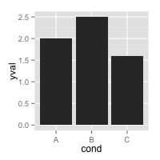 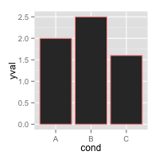 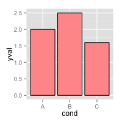 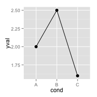 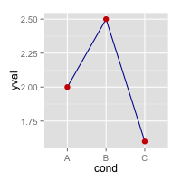
Mapping variable values to colors
Instead of changing colors globally, you can map variables to colors -- in other words, make the color conditional on a variable, by putting it inside an aes() statement.
# Bars: x and fill both depend on cond2 ggplot(df, aes(x=cond, y=yval, fill=cond)) + geom_bar() # Bars with other dataset; fill depends on cond2 ggplot(df2, aes(x=cond1, y=yval)) + geom_bar(aes(fill=cond2), # fill depends on cond2 colour="black", # Black outline for all position=position_dodge()) # Put bars side-by-side instead of stacked # Lines and points; colour depends on cond2 ggplot(df2, aes(x=cond1, y=yval)) + geom_line(aes(colour=cond2, group=cond2)) + # colour, group both depend on cond2 geom_point(aes(colour=cond2), # colour depends on cond2 size=3) # larger points, different shape # Equivalent to above; but move "colour=cond2" into the global aes() mapping ggplot(df2, aes(x=cond1, y=yval, colour=cond2)) + geom_line(aes(group=cond2)) + geom_point(size=3)
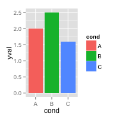 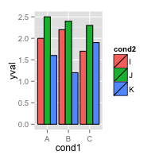 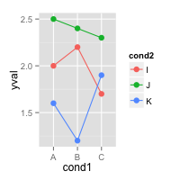
A colorblind-friendly palette
These are color-blind-friendly palettes, one with gray, and one with black.
To use with ggplot2, it is possible to store the palette in a variable, then use it later.
# The palette with grey: cbPalette <- c("#999999", "#E69F00", "#56B4E9", "#009E73", "#F0E442", "#0072B2", "#D55E00", "#CC79A7") # The palette with black: cbbPalette <- c("#000000", "#E69F00", "#56B4E9", "#009E73", "#F0E442", "#0072B2", "#D55E00", "#CC79A7") # To use for fills, add scale_fill_manual(values=cbPalette) # To use for line and point colors, add scale_colour_manual(values=cbPalette)
This palette is from http://jfly.iam.u-tokyo.ac.jp/color/:
/colorblind_palette.jpg)
Color selection
By default, the colors for discrete scales are evenly spaced around a HSL color circle. For example, if there are two colors, then they will be selected from opposite points on the circle; if there are three colors, they will be 120° apart on the color circle; and so on. The colors used for different numbers of levels are shown here:
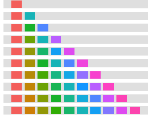
The default color selection uses scale_fill_hue() and scale_colour_hue(). For example, adding those commands is redundant in these cases:
# These two are equivalent; by default scale_fill_hue() is used ggplot(df, aes(x=cond, y=yval, fill=cond)) + geom_bar() ggplot(df, aes(x=cond, y=yval, fill=cond)) + geom_bar() + scale_fill_hue() # These two are equivalent; by default scale_colour_hue() is used ggplot(df, aes(x=cond, y=yval, colour=cond)) + geom_point(size=2) ggplot(df, aes(x=cond, y=yval, colour=cond)) + geom_point(size=2) + scale_colour_hue()
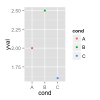
Setting luminance and saturation (chromaticity)
Although scale_fill_hue() and scale_colour_hue() were redundant above, they can be used when you want to make changes from the default, like changing the luminance or chromaticity.
# Use luminance=45, instead of default 65 ggplot(df, aes(x=cond, y=yval, fill=cond)) + geom_bar() + scale_fill_hue(l=40) # Reduce saturation (chromaticity) from 100 to 50, and increase luminance ggplot(df, aes(x=cond, y=yval, fill=cond)) + geom_bar() + scale_fill_hue(c=45, l=80) # Note: use scale_colour_hue() for lines and points
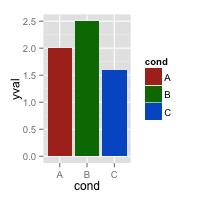 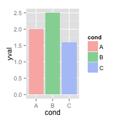
This is a chart of colors with luminance=45:
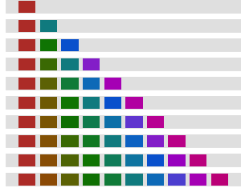
Palettes: Color Brewer
You can also use other color scales, such as ones taken from the RColorBrewer package. See the chart of RColorBrewer palettes below. See the scale section here for more information.
ggplot(df, aes(x=cond, y=yval, fill=cond)) + geom_bar() + scale_fill_brewer() ggplot(df, aes(x=cond, y=yval, fill=cond)) + geom_bar() + scale_fill_brewer(palette="Set1") ggplot(df, aes(x=cond, y=yval, fill=cond)) + geom_bar() + scale_fill_brewer(palette="Spectral") # Note: use scale_colour_brewer() for lines and points
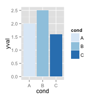 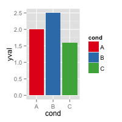 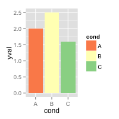
Palettes: manually-defined
Finally, you can define your own set of colors with scale_fill_manual(). See the hexadecimal code chart below for help choosing specific colors.
ggplot(df, aes(x=cond, y=yval, fill=cond)) + geom_bar() + scale_fill_manual(values=c("red", "blue", "green")) ggplot(df, aes(x=cond, y=yval, fill=cond)) + geom_bar() + scale_fill_manual(values=c("#CC6666", "#9999CC", "#66CC99")) # Note: use scale_colour_manual() for lines and points
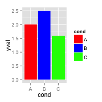 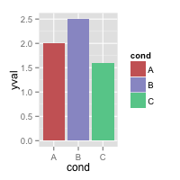
Continuous colors
[Not complete]
See the scale section here for more information.
# Generate some data set.seed(133) df <- data.frame(xval=rnorm(50), yval=rnorm(50)) # Make color depend on yval ggplot(df, aes(x=xval, y=yval, colour=yval)) + geom_point() # Use a different gradient ggplot(df, aes(x=xval, y=yval, colour=yval)) + geom_point() + scale_colour_gradientn(colours=rainbow(4))
Color charts
Hexadecimal color code chart
Colors can specified as a hexadecimal RGB triplet, such as "#0066CC". The first two digits are the level of red, the next two green, and the last two blue. The value for each ranges from 00 to FF in hexadecimal (base-16) notation, which is equivalent to 0 and 255 in base-10. For example, in the table below, "#FFFFFF" is white and "#990000" is a deep red.
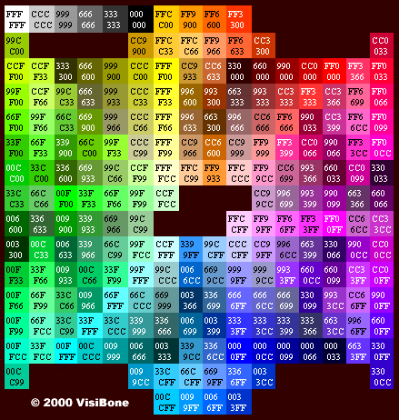
(Color chart is from http://www.visibone.com)
RColorBrewer palette chart
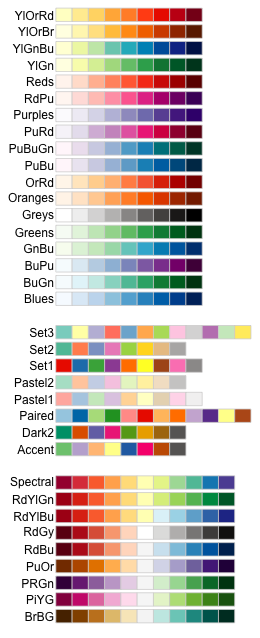